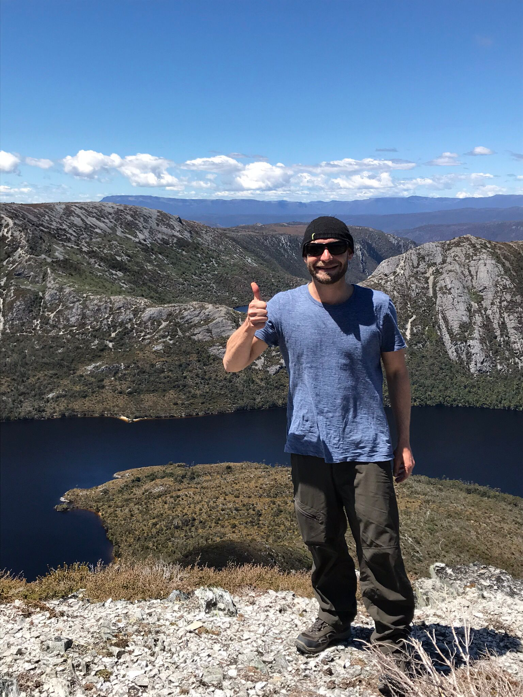

About Me

I come from a background in marine tourism, but have always had a
passion for designing and building websites. Having dabbled in HTML,
CSS, Wordpress and building MySQL databases, in 2022 I decided to take
the next step and enrol in an accelerated Web Development bootcamp.
I have a strong desire to become a full-stack web developer, and to
have the skills to build web applications across multiple frameworks.
I believe Ruby on Rails is an excellent full stack framework for
creating and deploying web applications, and the MERN stack, being
based solely on JavaScript is an amazing framework to allow for
collaboration between developers and provides an excellent opportunity
to gain advanced skills in one area of tech. I am also interested in
cloud computing, particularly AWS.
When not behind my laptop, I enjoy hiking, photography and listening
to audiobooks.